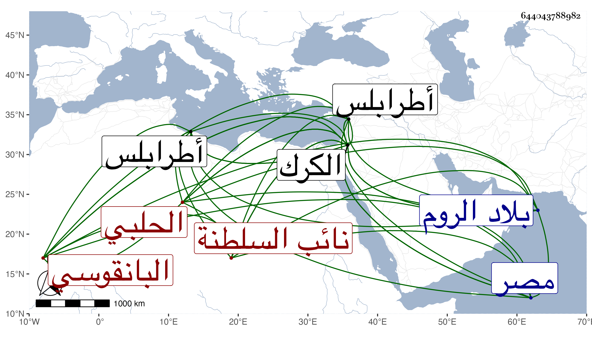

0902Sakhawi.DawLamic.ITO20230111-ara1.EIS1600.644043788982
Biography ID: 644043788982
423
حسن بن علي بن أحمد حسام الدين الكجكني الحلبي البانقوسي نائب السلطنة بالكرك . ترقى في الخدم إلى أن أمر بطرابلس وقدم مع يلبغا الناصري لما انتزع الملك من برقوق فأمره بالكرك وتقدم عند الظاهر برقوق لكونه خدمه بالكرك ثم قربه وأمره بمصر إمرة خمسين وبعثه رسولا إلى الروم فمات في ثالث رجب سنة إحدى . قاله شيخنا في أنبائه ، زاد غيره عن ستين ودفن في تربته تجاه حوش السلطان ورسم له السلطان بثلثمائة دينار في ختمات واطعام ونحو ذلك على قبره فتولى ذلك العيني بإشارة أرغون شاه البيدمري له بذلك ، وكان أميرا جليلا جميل المحاضرة حلو المداعبة تام المعرفة بجياد الخيل والجوارح محبا في العلماء وأهل الخير عاقلا سيوسا ، وهو في عقود المقريزي
